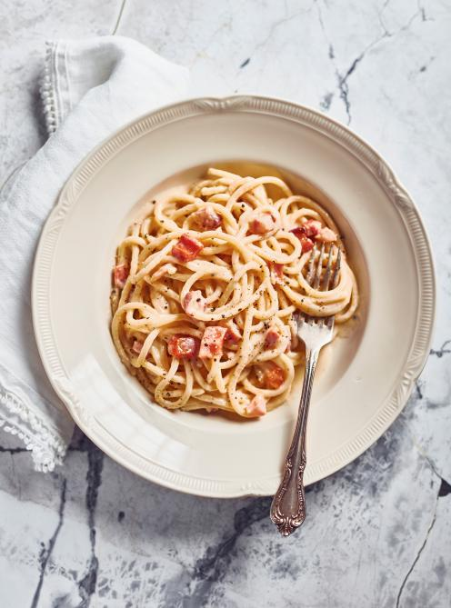

Carbonara Pasta

Description
Carbonara is a pasta dish made with eggs, hard cheese, cured pork, and
black pepper. The dish took its modern form and name in the middle of the
20th century. The cheese is usually Pecorino Romano, parmesan, or a
combination of the two.
Ingredients
- 1/4 lb pancetta, diced
- 1 tbsp olive oil
- 1 tbsp black peppercorns, crushed in a mortar and pestle
- 1/2 lb spaghettoni
- 4 egg yolks
- 3/4 cup Parmesan cheese, finely grated
- 3/4 cup Pecorino cheese, finely grated
Steps
-
In a large skillet over medium-high heat, brown the pancetta in the oil.
Add the pepper and cook 1 minute longer. Set the pancetta aside, leaving
the cooking fat in the skillet.
-
In a pot of lightly salted water, cook the pasta for 5 minutes or until
slightly tender but still firm at the centre. Reserve 1½ cups (375 ml)
of the pasta cooking water. Drain the pasta.
-
In a bowl, combine the egg yolks with both cheeses and ¼ cup (60 ml) of
the pasta cooking water. Set aside.
-
Meanwhile, in the same large skillet you used to cook the pancetta,
continue to cook the pasta with 1/2 cup (125 ml) of the pasta cooking
water, stirring constantly, until al dente and the liquid has
evaporated. Add more pasta cooking water if it evaporates before the
pasta is properly cooked.
-
Off the heat, add the egg yolk mixture and the pancetta to the pasta.
Stir continuously to prevent the eggs from coagulating. Add more pasta
cooking water to thin out the sauce as needed. Serve immediately.
Generously season with pepper.
Back to main menu